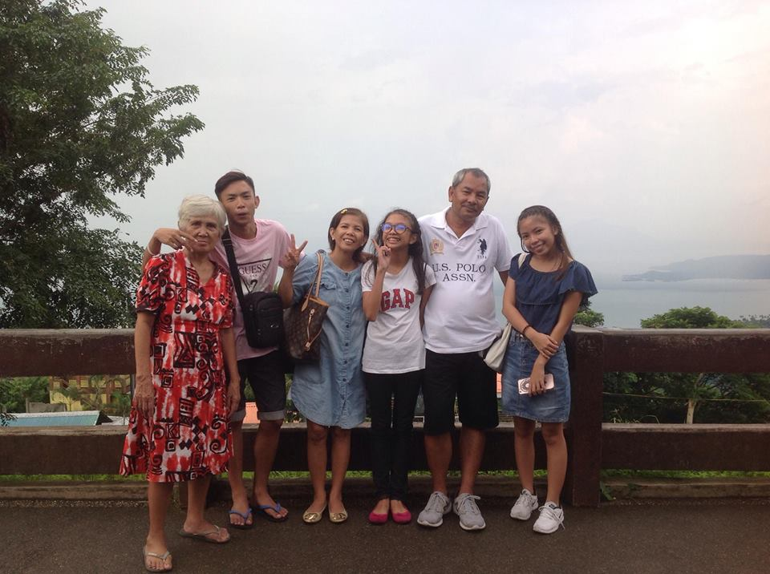
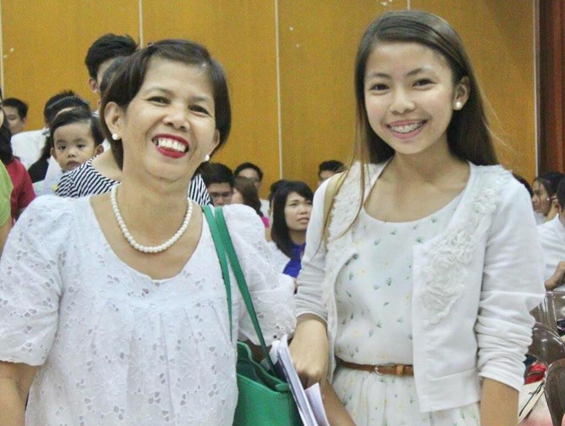
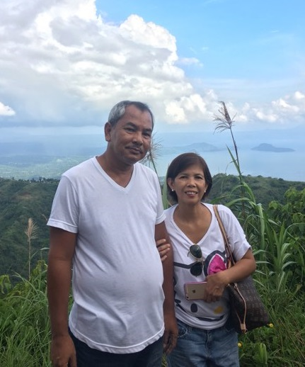
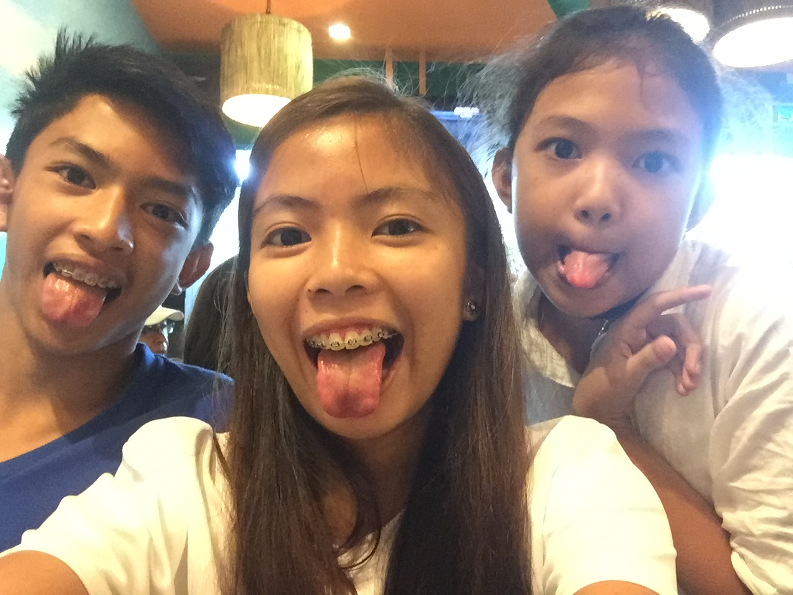
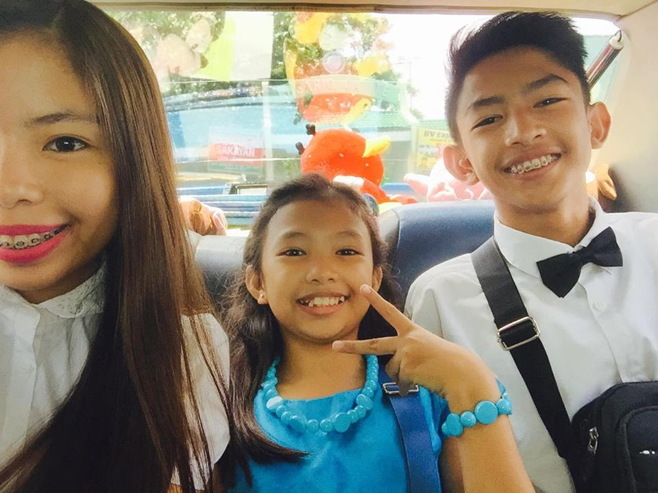
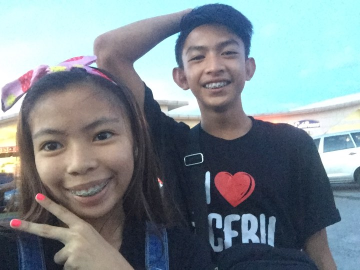
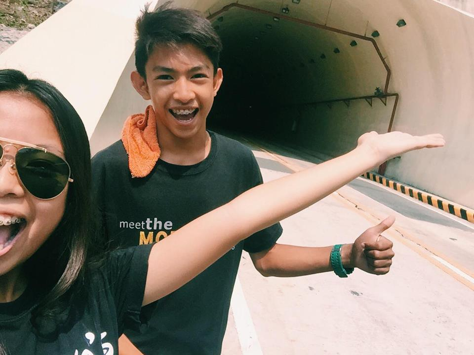
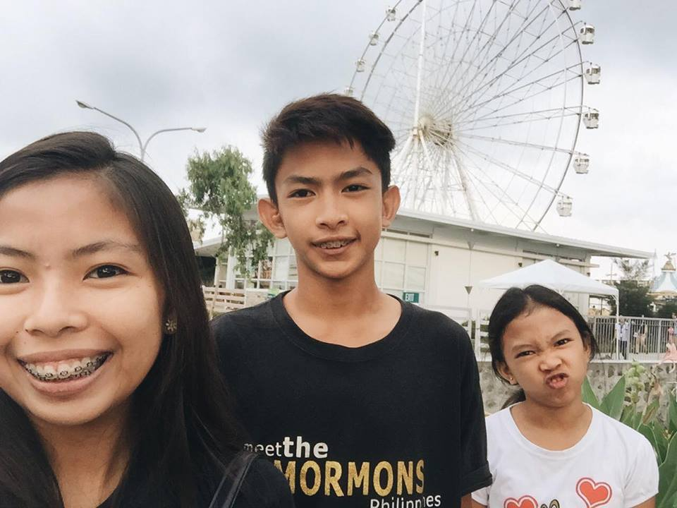

Estrella Santiago Buenaventura , turning 53, my mother dear!!! ❀
She really is the breadwinner of our family since then. She is an ISO consultant and at the same time a hands-on mother.
Never in my life I've felt that she wasn't there during the strongest and weakest moments of my life, and of course, in betweens.
My mom is my bestfriend. We talk of any topic under the sun freely and bagets as much as possible.
She influences me a lot, most importantly in my decisions and personal perspectives in life.
She counsels me a lot and spoils me a lot with my wants. She's very vocal in expressing to our family members
her aspirations, plans, and feelings for all of us.
I can tell my mom all of my secrets and we talk of it liberatedly. From her I've learned what unconditional love really is. From her
example we've thoroughly learned the value of family.
such as respect, humility and so on.
I love my mom so much and I want to own her divine characteristics as I ready myself for my future responsibilities
as a woman. ❤

Edgar Francisco Buenaventura , 52, my dadsie!!! ❀ HE IS DEFINETELY JACK OF ALL TRADES.
He is a Civil Engr. Since my mom is working, he stays at home with us. We operate 6 tricycles and he does the maintainance for all of them.
He cooks for us, does the laundry, irons our clothes, does drop us in our schools, and does both all of the household chores and the natural-father-responsibilities.
He loves us more than anything. He is always ready to support all of us in every aspects of our lives. He always make time just to spend precious
moments of laughter with all of us. He is so comical and witty. He always makes everyone laugh. His example is one of a kind.
We've learned a lot from him, both
in the comical and serious phases of our lives. He makes sure that we are always safe and secured. He always adjusts for our family. I love his
patience. I want my future husband to have the same characteristics
that my dad does have. <333
  
 
The guy is my younger brother, Ian Paulo Buenaventura and the girl is
our youngest sibling, Denise Joy S. Buenaventura ❀.
My younger brother is already Grade 12, dreaming to be an aircraft mechanic someday.
He is a basketball player and he's almost residing on basketball courts. He's so funny, jolly, and playful. He often do not obey me when I make utos and that's always
the reason why we always fight. He's a hearthrob and he's "Gwapong Gwapo Sa Sarili" . I super hate his musical genre although he sometimes love Ed Sheeran. He makes
me laugh when I'm feeling stressed and down. I love his nature of being makulit.
Our bunso is the achiever among the three of us. She's just on her 6th grade, she's 11 years old and always brings home atleast
five medals every end of the school year. She's super duper madaldal and her kadaldalan mostly gives me headaches when I'm at home.
Despite of her nature of being the most madaldal, she's so masunurin and respectful. I know she'll go places someday because of her high aspirations
in life.
Since I am the ate and the most superior among the three of us, I also annoy them most of the time
by bombarding utos , leading to away's . We fight,
because annoy each other so much
but I love these two to the farthest galaxy & back. I love my family. ❤
copyright © 2018 Best Viewed In: Google Chrome Best Viewed In Screen Resolution: 1366 x 768